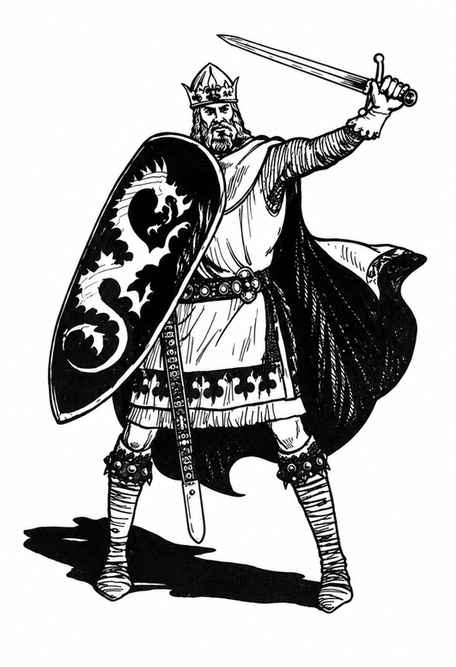

亚瑟王 · King Arthur
守序善良英雄，AC 0，移动 12 英寸（穿甲时 6 英寸），123 点生命值；14 级圣武士、5 级吟游诗人。亚瑟由 Merlin 抚养并训练，拔出石中剑后成为英格兰国王，建立圆桌骑士团，维护合法正义与公平竞争。
他持 Excalibur，一把 +5 守序善良锋锐魔剑；剑鞘能使持有者免受任何攻击切割，穿刺和砍击对亚瑟造成半伤，钝击造成全额伤害。盾牌为金色巨龙形制的圣物。

上一节：亚瑟王英雄 · Arthurian Heroes
下一节：兰马洛克爵士与梅林 · Sir Lamorak 与 Merlin